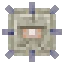
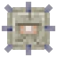

Structures in Minecraft are very important and are a great place to find rare resources and cool places to build.
 

There are many biomes ranging from sprawling plains to vast deserts and deep oceans which help the game feel interesting and real.
There are three dimensions in Minecraft which you can journey through using portals.